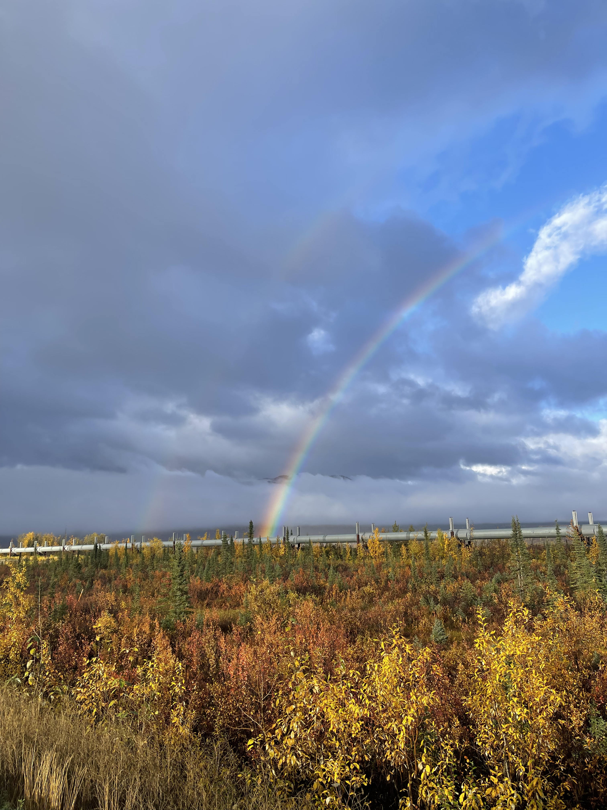
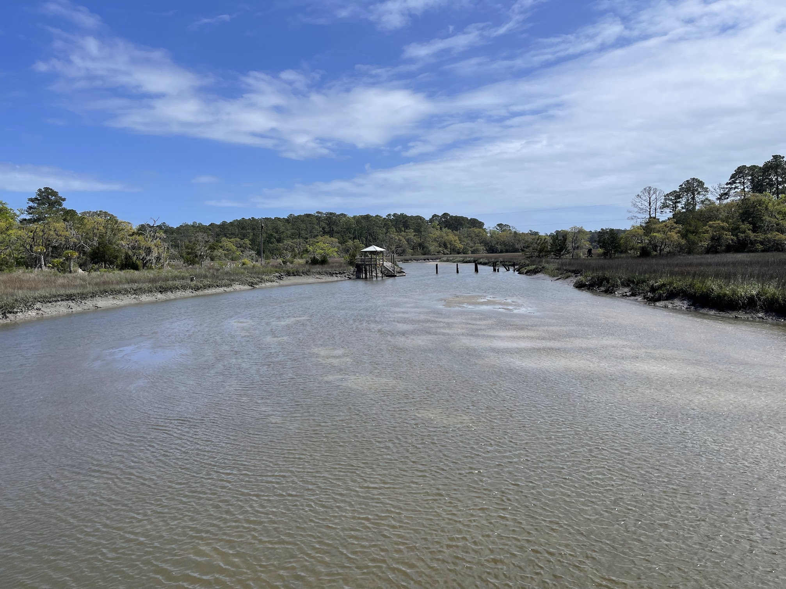

School of the Earth, Ocean, and the Environment
Integrated Systems Hydrology Lab
We are an interdisciplinary lab that integrates remote sensing, mechanistic and machine learning models, field observations, and community based knowledge to address complex hydrological challenges. We consider the interactions between surface water, groundwater, climate, land use, and human activities to develop a holistic understanding of water resources.
News
- May 2026: Liam Baker graduated with his bachlor's in Environmental Science. Congratulations, Liam!!
- Apr 2026: Haven successfully defended her thesis proposal titled Estuarine Hydrodynamic Modeling for Fecal Indicator Bacteria Transport: A Comparative Study of the Edisto Island Watershed and St. Helena Sound
- Apr 2026: Ashley's proposal on the hydrology of orange rivers in Alaska was funded through the Undergraduate Research Campus Partner Grant.
Our joint lab group

Photos from the field



